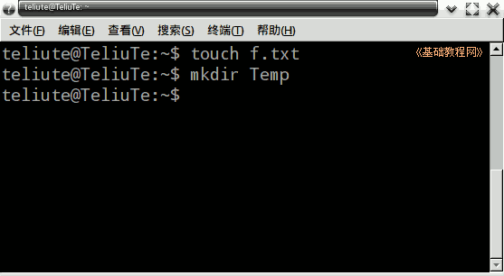
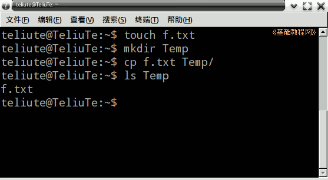
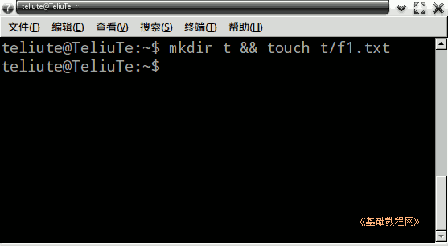
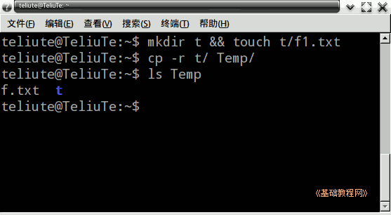

Ubuntu 命令行教程
作者：TeliuTe 来源：基础教程网
八、cp 复制命令 返回目录 下一课复制可以把一个文件拷贝一份做备份；
1、cp 命令
1）打开终端窗口，输入 touch f.txt 创建一个空文件，再用 mkdir Temp 创建一个文件夹；

2）输入命令 cp f.txt Temp/ 也就是把 f.txt 复制到 Temp 文件夹里，然后用 ls Temp 看一下Temp里面的内容；

3）如果要复制一个文件夹过去，加上 -r 参数，下面的两个 && 是连接符号，两个命令依次执行；
先创建一个文件夹里面放一个文件：mkdir t && touch t/f1.txt

4）再输入复制命令 cp -r t/ Temp/ 然后用 ls Temp 来查看一下里面的内容；

5）更多的用法，可以使用 cp --help 命令来查看；
本节学习了 cp 复制命令的基础知识，如果你成功地完成了练习，请继续学习下一课内容；
本教程由86团学校TeliuTe制作|著作权所有
基础教程网：http://teliute.org/
美丽的校园……
转载和引用本站内容，请保留版权信息和本站链接。